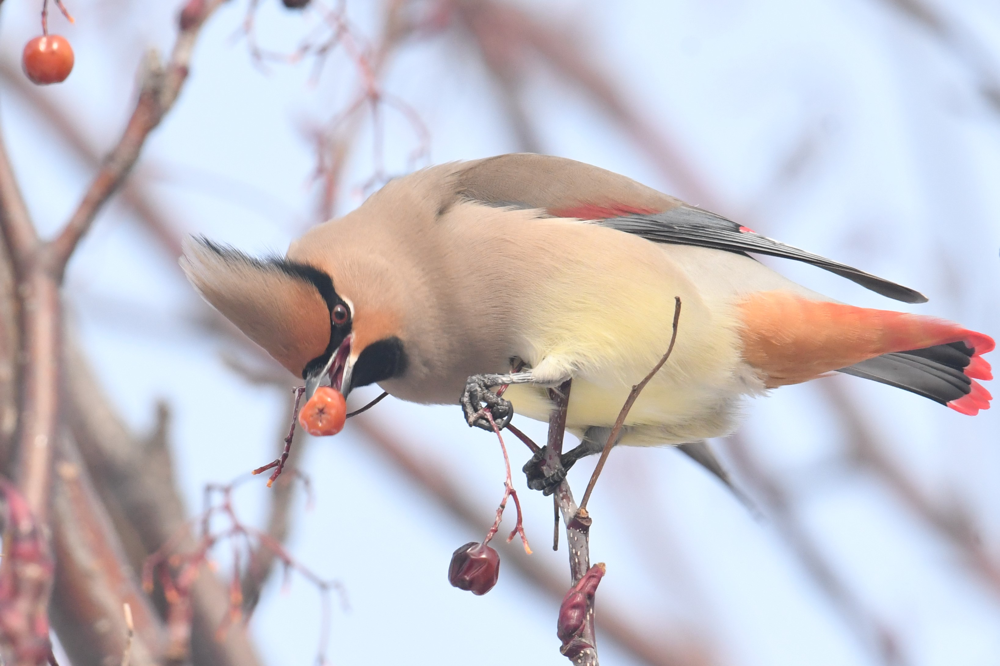

厳冬期における北海道のツグミ類
大まかな流れとしては例年、年末に近づくとツグミの姿をちらほらと見かけるようになります。年末年始はまだ警戒心が高く、静かな公園や人通りの少ない山沿いのナナカマドに訪れます。この段階ですでに珍ツグミが発見されることも多くありました。
次の段階では公園に加えて少し人通りのある団地の植栽されたナナカマドに進出します。そして群れの規模を拡大しつつ、徐々に人通りのある大通りの街路樹として植栽されたナナカマドに移動します。徐々に群の規模は拡大し数百羽の群れも観察できますが、最終的にナナカマドが枯渇すると急激に数を減らし、終焉を迎えるのです。
厳冬期のツグミ類の面白い点は渡来数の年変動が非常に大きい点です。前述の通り2020・2021年シーズンは明確な当たり年であったと考えていますが、一方で2021・2022年シーズンは完全な外れ年でした。
そもそもの要因である北海道へのツグミの飛来数と共に大きな鍵を握る要素は、ナナカマドの実の豊作・凶作です。地域によっても実のつき方が変わります。余談ですが、レンジャクの飛来数が多い年はあっという間にナナカマドが枯渇します。
やはり気になるのはツグミ達はどこから来たのか、そしてどこに消えたのかという点です。飛来元については警戒心が徐々に薄くなることからも山地に広く分布していたツグミ達が市街地へ降りてきたものと推測することができますが、向かう先については全く想像できません。
さらに食物のある南方へ向かうかと思いきや、北海道でワキアカやノハラが多く観察された2020・2021年シーズンも本州ではほとんど記録が無かったように記憶しています。大陸へ抜けていくのか、もしくは北海道や東北などのどこかで過ごしているのでしょうか。

ノハラツグミについて
注目すべき種類はやはりノハラツグミではないでしょうか。国内の図鑑ではほぼ全てにおいて迷鳥扱いとなっている本種ですが、2010年代初頭から冬季の北海道での記録が増えており、近年は道央・道北を中心にほぼ毎年のように記録されているようです。ノハラツグミは20世紀末までアルダン川西部を分布の東限とし、ベルホヤンスク山脈の東側では記録が無かったとされています。しかし2009年から分布の東進が始まり、2014年にはマガダンに到達。さらにカムチャツカに到達後2020年までにアナデリ川まで繁殖分布域を広げ、東側への分布拡大距離は実に1000kmに及ぶことが分かっています(Yong et al. 2021)。要因として他にあり得るものは渡り経路の変化や越冬地の東方拡大ですが、繁殖域拡大と北海道の観察記録増加のタイミングが一致するため、ロシアにおける繁殖域の東方拡大が北海道でのノハラツグミ観察記録増加の主な要因と考えるのが妥当なのでしょう。これが一時的なものなのかどうか、今後の北海道におけるノハラツグミの動向が気になるところです。
本来ならばツグミの個体数に対するノハラツグミの割合などを記録できると良いのですが、ツグミの群れは数が流動的である上に針葉樹の中や建造物の屋根などとナナカマドを頻繁に行き来するためカウントが非常に困難です。翌日には群れが移動していることも多く、ある地域でのツグミ総個体数の把握は不可能といえます。しかし、大雑把な数でも多少は参考になると考え、以下のシーズンごとのページには筆者の主観的な体感のカウント数を掲載します。
2019・2020年シーズン
ツグミの飛来数は多く、当たり年であったと考えています。また、当時のノートを見るとレンジャクの渡来数が非常に多く、例年よりも終結が早かった年であることが伺えます。ノハラツグミも複数観察されていたようですが私達の観察スキルが足りず、先輩ONの発見した1羽が唯一でした。当時は観察ポイントもピークの時期も分からず、手探りの状態だったのです。それでもみんなで歩き回り、ナナカマドの多いポイントをマップで共有し、分からないなりに健闘したのを覚えています。私は1年生だったこともあり、かなり忙しい時期と重なってしまったためほとんど時間を割けず、気が付けば終結していた非常に悔しいシーズンでした。
2020.1.5 札幌市
ノドアカツグミ雄成鳥1,ツグミ5±
やはりこの年といえばやはりノドアカを思い出します。先輩チョベリグから突然"ノハラいた"のLINE。偶然300mほどしか離れていない場所で鳥を見ていたのでもちろんダッシュです。到着するなりノドアカやこれ、という衝撃の一言。当初は非常に警戒心が強く、針葉樹に入るとなかなか外に出てきませんでした。雪が強くなる中、2人でじっくり観察し大満足で帰路に着いたのは良い思い出です。その後10日ほどは身内のみでコソコソと観察を続けていましたが、ついに知らない方に発見されると数日で都市公園に移動、予想外の長期滞在となりました。この頃にはギャラリーも多く、警戒心も驚くほど薄くなっていました。こんな針葉樹の中で息を潜めてる写真は逆に珍しいかもしれません。

2020.1.5 ノドアカツグミ 2020.1.11 ギンザンマシコ
2020.1.17 江別市
ハチジョウツグミ2,ツグミ200~300,レンジャク1000+
ツグミ観察に慣れていない当時のカウントなのであまり信憑性はありませんが、キレンジャク,ヒレンジャク共に非常に多かったことは間違いないようです。勝手な記憶ですが、ツグミに関してはもう少し数がいたような気がします。この年は1月25日ごろがピークであったと考えています。なお、1月30日にはほぼ終結していた様子です。

2020.1.17 ハチジョウツグミ
2020・2021年シーズン
どの地域のナナカマドも総じて豊作で、ツグミの個体数も非常に多かった明確な当たり年です。年末からワキアカツグミが観察され、最終的に道央での確認は重複などを考慮しても10個体弱が観察されていた印象です。ノハラツグミも多い年で、体感道央での観察件数は20個体弱に上ると思われます。レンジャクやハチジョウツグミなど何もかも多い印象で、2月初めの大きなピークは一瞬で過ぎ去りました。
2020.12.11~12 札幌市
ワキアカツグミ1,ハチジョウツグミ2,ツグミ,レンジャク
11日昼頃に知り合い鳥屋BTさんからワキアカ発見の報が。こりゃ行くしかないと、授業の終わりと同時に先輩チョベリグにカーシェアで拾ってもらい、現地に駆けつけました。まだ終結初期段階であり警戒心が非常に強く、落ち着きがないため、日没直前にようやく発見した記憶があります。この時点でハチジョウツグミが複数観察されていることからも、当たり年となることが予感されました。
2021.1.5 札幌市
ハチジョウツグミ,ツグミ
ワキアカツグミが他地点でも出現したという話を聞き様子を見に。ツグミの数は多かったものの数の記録がなく数字では示せません（大体の数をメモするように心がけたいものです）。しかしながらワキアカを見ることはできず、ハチジョウツグミ（これも数の記録がないものの恐らく1羽）のみの観察でした。最終的にこの地点では複数羽のワキアカツグミが観察されていました。結局僕は見れませんでしたが。
2021.1.16 江別市
ハチジョウツグミ,ツグミ
広範囲を身内+他大学の方々と計9人体制で捜索しましたがまだピークには早くフライング気味だった日でした。それでも各地点にツグミの群れは見られ、全員の合計ではハチジョウツグミも5羽弱は観察されていました。やはりこの年から導入したナナカマドマップはとても有用でした。群の規模は50前後の中規模な群れが多く、ほとんど3桁に達しないような状態であったようです。このような状態ですと尚更全体数の把握は難しいですね。ツグミを狙うハイタカも少しずつ登場しているようです。
2021.1.16 ハチジョウツグミ
2021.1.17 札幌市
ツグミ
1月5日と同所ですが相変わらずワキアカツグミは確認できず。さらにツグミも少なく、同所のピークは確実に終了した雰囲気。マヒワとベニヒワが多かったようです。
2021.1.18 札幌市
ノドアカツグミ雌幼鳥,ハチジョウツグミ1,ツグミ
北大でツグミを探していると先輩チョベリグからノドアカ見つけたとの連絡が。そんなことあります？2年連続同じ人間が出すような種では無いと思いますけどね。もちろん大急ぎで向かいました。現地にはすでに知り合い鳥屋BTさんやSさんズなどがいらっしゃいました。環境はなんと針葉樹林で、ツグミの個体数は把握困難でしたが数十羽であったと記憶しています。同所にいたハチジョウとの比較が非常に興味深く、確かに胸の斑紋はハチジョウにも細い個体はいますがさすがにノドアカほど細くはありません。また全体的な彩度も低く、対照的に尾羽の裏は綺麗なオレンジ色でした。下尾筒の比較写真が撮れたのが大きな収穫です。あざした！
2021.1.18 ノドアカツグミ 2021.1.18 ノドアカツグミ,ハチジョウツグミ
2021.1.23 江別市/札幌市
ノハラツグミ1,ハチジョウツグミ3~5,ツグミ300(以下ツグミ個体数はその日の最大群の個体数とします)/ツグミ100±,レンジャク30±
悲願のノハラ自力発見の日。2013年当時大珍鳥だったこの鳥を神奈川で外して以来、見た目が好みなこともあって自力発見を目指していた鳥でした。ただただ嬉しかったです。ハチジョウツグミ率も高かった日でした。メモには人通りの少ない公園などに群れが集中していたと書かれています。
2021.1.23 ノハラツグミ 2021.1.23 ノハラツグミ
2021.1.24 苫小牧市
ノハラツグミ2,ツグミ150+
沿岸部での鳥見の後、知り合い鳥屋KMさんが発見した（んだった気がする）ノハラを回収。 最盛期は過ぎたと思われるこの地点ですがまだまだツグミの群れは健在。2羽のノハラもきちんと回収できました。にしても1つの木に2羽のノハラが止まっている様子は本当に異様です。ホシムクドリのように将来小群が渡来するようになるんでしょうかね。少しだけ怖さも感じます。
2021.1.24 ノハラツグミ 2021.1.24 ノハラツグミ,ツグミ
2021.1.28 札幌市
ノハラツグミ2,ツグミ,レンジャク1000+
この日はレンジャクがとてつもなく多かった記憶。ツグミは記述がないものの300~400程度っだったと思います。この地点の恐らくピークで、針葉樹から溢れた鳥たちが民家やマンションの屋根など至る所で休息をとっていました。特にレンジャクの勢いは凄まじく、キレンジャクを主体とした群れが車通りをほとんど気にせずにナナカマドに群れていました。ノハラは2個体見つけることができ大満足。飛び方も鳴き声もかなり異なるように感じました。ハチジョウツグミはいなかったようです。
2021.1.28 ハイタカ雌 2021.1.28 ノハラツグミ 2021.1.28 ノハラツグミ

2021.1.28 ヒレンジャク 2021.1.28 キレンジャク,ヒレンジャク,ツグミ 2021.1.28 キレンジャク,ヒレンジャク,ツグミ
2021.1.31 北広島市
ハチジョウツグミ5~7,ツグミ300±
ハイタカが常に張り付きカオス状態となっていた北広島、ハチジョウツグミ率が非常に高かったです。ハチジョウツグミが良いペースで現れてくれると飽きずにいつまでも見ていられます。いまいち性齢は分からないですが、個体差大きくて面白いですよね。
2021.1.31 ハチジョウツグミ 2021.1.31 ハチジョウツグミ 2021.1.31 ハチジョウツグミ×ツグミ交雑個体
2021.2.3 江別市
ワキアカツグミ1,ハチジョウツグミ,ツグミ
勝負の江別ですね。ツグミもハチジョウツグミも数の記載なし。正直数えられる状態ではなかったのです。ツグミが街中に進出してくる当初は針葉樹の多い団地や公園などを共通の起点とした比較的明確な群れが形成されますが、終盤の警戒心が薄い時期になると縦横無尽に動き回るので大まかな数を掴むことすらできませんでした。何羽くらいいたのでしょうか、ムクドリなどと違い同じ群れでもあまりギュッと密集しないので写真から伝わりにくいのも難点です。
2021.2.3 ワキアカツグミ 2021.2.3 ワキアカツグミ,ツグミ 2021.2.3 ハチジョウツグミ,ツグミ
2021.2.4 江別市
ノハラツグミ1,ハチジョウツグミ,ツグミ
愛想の良いノハラがいました。明らかなピークで、今にもナナカマドの実が枯渇しそうでした。すでに枯渇気味の場所も多く、地面に落ちた実を食べる個体が多かった記憶があります。ハイタカに高頻度で掻き回され、全体数の把握は非常に困難でした。思えば当地のレンジャクの数はあまり多くなかったように思います。
2021.2.4 ノハラツグミ 2021.2.4 ノハラツグミ 2021.2.4 ノハラツグミ
2021.2.5 江別市
ハチジョウツグミ5±,ツグミ
枯渇した箇所が多くなり車道側へ実を啄みに出てしまう個体も。この3日間は猛禽類が多く集まり、メモによると3羽のハイタカ雌、1羽のオオタカ成鳥、1羽のハヤブサ幼鳥、オジロワシが観察されたようです。2023年現在、思い返してみるとハイタカ雌には何度もツグミの群れを蹴散らされましたが、ツグミを狙うハイタカ雄は見たことありません。ツグミを観察していると主にハイタカには何度もがっかりさせられますが、ハイタカが来るほどツグミが集中している場所なんだなあと気楽に思うメンタルが必要ですね。
2021.2.5 ハチジョウツグミ 2021.2.5 ツグミ 2021.2.5 ハチジョウツグミ,ツグミ
2021.2.5 ハイタカ 
2021.2.5 オオタカ 2021.2.5 ハヤブサ,ツグミ
2021.2.6 むかわ町
ワキアカツグミ1,ツグミ
知り合い鳥屋BTさんに連れられ沿岸部へ。ついでにまだ滞在中のワキアカを回収。このシーズン3羽目の観察です。案外顔つきが似ているので、ノハラやハチジョウよりツグミ群中で目立ちません。
2021.2.6 ワキアカツグミ 2021.2.6 キレンジャク
2021・2022年シーズン
私が北海道に移住してから一番の外れ年でした。そもそもどの地域もナナカマドの実りが極端に悪く、ツグミの飛来数も僅かでした。例年のピークである2月初旬に新型コロナウイルス感染により自宅謹慎していたこともあり、ツグミを観察した記憶が全くありません。 知る限りでは道央ではノハラツグミの観察例は無かったと思われます。一方のハチジョウツグミは複数個体が観察されていたようです。北海道に来て3年目にして初めての明確な外れ年で、ツグミ飛来数の年変動の大きさを実感しました。
2022・2023年シーズン
当たり年の部類ではあると考えていますが、現時点ではとても不思議な年であると感じています。まずナナカマドの地域ごとの豊作・凶作の差が激しく、道央圏は比較的豊作なものの苫小牧や鵡川といった太平洋側の地域で去年に引き続き凶作と言える状態でした。車からパッと眺めただけではナナカマドと認識できないものもあるほどです。さらに大きな特徴はハチジョウツグミの割合が低いことです。例年、体感1/150~300程度の割合で見られていた本種ですが、今年は1日に1-2羽しか見つからないことが多いです。その一方でマミチャジナイ・シロハラ両種の観察例が多いことも面白い特徴であると感じます。ネット検索すると本シーズン以外でも冬季に観察されている両種ですが、本シーズン以外の身内での観察例は無く、通常冬季の個体数は非常に少ないものと考えています。 そのような両種が複数地点で1~2羽観察できている今季はかなり異端な年といえると思われます。ノハラツグミは本シーズンも観察例がありますが、2〜3年前シーズンに比べると少ないようです。これはツグミ全体の個体数が少ないのか、割合が低いのか、今ひとつよくわかりません。個人的な観察としては2/8まで卒研発表などの予定があったこともあり2/9から本腰を入れましたが、それでもピークを捉えられるほど各地のピークが遅いシーズンでした。
2023.1.27 札幌市
シロハラ1,ツグミ200~300,ヒレンジャク10±
今年もワキアカの観察例があり、後輩についていく形で様子見に。確率は悪いようですが待ち続けると夕方に姿を現すことが多いとのこと。めんどくさいので撤収しました。朝の団地には数多くのツグミが確認できたものの昼には消失。南西側で過ごしているものと考えられます。
2023.1.28 札幌市
ハチジョウツグミ1,ツグミ30±
このポイントはまだまだ早い様子で、針葉樹の多い公園近辺に辛うじて群れがいるのみ。メモには10日後くらいがピークになりそうと記してあります。ハチジョウは別場所でツグミ25羽程度の群中。
2023.2.2 札幌市
ワキアカツグミ1,マミチャジナイ雄成鳥1,シロハラ幼鳥1,ハチジョウツグミ3,ツグミ150±
ワキアカを2シーズンぶりに観察。やはり顔がツグミに似ている分後ろ振り向き姿などで気づくには注意が必要そうです。また冬季のマミチャジナイを初めて見ました。
2023.2.2 ワキアカツグミ 2023.2.2 マミチャジナイ 
2023.2.2 シロハラ
2023.2.4 札幌市
ノハラツグミ1,ツグミ80±,レンジャク10±
キレンジャク初認です。今年はそもそも個体数が少ないレンジャクでしたがヒレンジャクが多い印象です。ノハラツグミは昨日同期Hが見つけたものと同一です。群れは大きく分けて2つでそれぞれ80+と50+程度で、まだ車の通行をかなり嫌がる様子でした。
2023.2.4 ノハラツグミ 2023.2.4 ツグミ
2023.2.5 苫小牧市/恵庭市/北広島市/江別市
ツグミ5±/ツグミ150±/ツグミ100+/200+
各地の様子を見るつもりで広く浅く捜索。ハチジョウすら見つからず。特に江別の良ポイントがツグミ40+と壊滅していたのが痛かったです。やはり太平洋側のナナカマドは凶作なようで、希望が持てないと感じました。その一方で恵庭市では良ポイントに遭遇。数は良いもののハチジョウがやはり見つからなかったです。ツグミが徐々に街中に進出しつつあることが感じられました。
2023.2.5 ツグミ 2023.2.5 ハイタカ
2023.2.9 札幌市
ハチジョウツグミ1,ツグミ200+
ピーク目前の雰囲気。レンジャクは全く姿を確認できず、ややナナカマド供給過多の印象があります。3つの群れを確認できましたが、雪がひどく早々に退散しました。
2023.2.9 ツグミ 2023.2.9 ツグミ
2023.2.10 江別市
マミチャジナイ1~2,ハチジョウツグミ1,ツグミ200+
ツグミの大群に当たるまでが長かった日です。前々日に良いと言われていた二箇所もこの日は0。ツグミ群の動きの早さを実感しました。やはりマミチャジナイが多いような印象です。
2023.2.10 マミチャジナイ 2023.2.10 ツグミ
2023.2.11 札幌市/江別市
ツグミ300-/ハチジョウツグミ2,マミチャジナイ1,ツグミ150+
札幌市のポイントは恐らくピーク。しかしハチジョウをはじめ何も見つからず、そうこうしているうちに交通量が増え、ツグミが分散してしまいました。先輩チョベリグが先入りしている江別に移動後は針葉樹から出入りする大きな群れを観察したもののハチジョウ2のみ。やはり増えているとはいってもノハラを見つけるのは運と時間が必要です。ムクドリはまさかの300羽越え。毎年数十羽程度は観察されるもののここまで大きな群れは見たことありません。しかしホシムクやギンムクの混入はありませんでした。
2023.2.11 マミチャジナイ 2023.2.11 ハチジョウツグミ 2023.2.11 ムクドリ
2023.2.13 札幌市
ハチジョウツグミ3,マミチャジナイorアカハラ1~2,ツグミ120+,レンジャク100+
3桁レベルのの群れが3箇所にありピーク目前もしくはピークであると思われます。ナナカマドも枯渇気味で、若干需要過多の状態である様子です。お腹が赤く背中が茶色のツグミを2回見ましたが、同一個体か判断できませんでした。赤の色調から片方はマミチャジナイでもう片方はアカハラのように感じましたがいかに。交通量が多く、さらにはハヤブサによる襲撃のため落ち着いた観察ができません。また明日の朝イチに出直します。
2023.2.13 ハヤブサ 2023.2.13 ハヤブサ